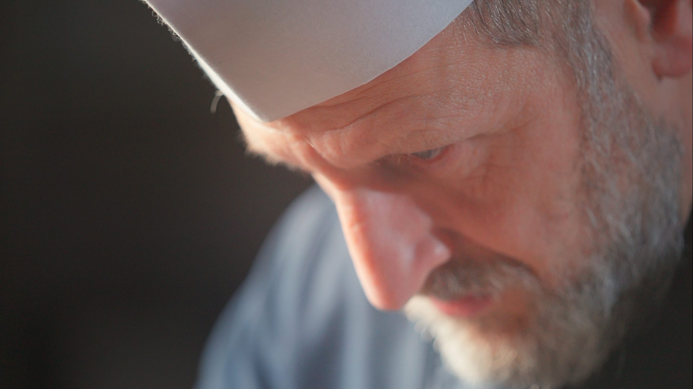

Restaurants Vidéaste | Strasbourg, Alsace Vidéaste pour restaurants et hôtels à Strasbourg et en Alsace
Votre table,
en film : vidéaste restaurant et hôtel à Strasbourg
Derrière chaque belle table, il y a des gestes, des produits, des visages. Vidéaste à Strasbourg, j’ai réalisé de nombreuses vidéos pour des restaurants et des hôtels, avec une idée simple : montrer ce qui fait l’âme d’un lieu.
Cela peut prendre la forme d’un grand film, où je filme le chef de cuisine pas à pas : quand il va chercher ses produits frais, quand il tient sa cuisine au cœur du rush, quand il dresse l’assiette avec précision. Le spectateur entre en cuisine.
Ou celle d’une vidéo plus courte pour présenter votre établissement : la devanture, les intérieurs, un ou deux plats qui donnent envie de pousser la porte. Beaucoup de formats sont possibles, et nous choisissons celui qui vous ressemble.
Du produit
à l’assiette : vidéo pour restaurants et hôtels en Alsace
01
Le grand film
Je filme votre chef pas à pas, de la recherche des produits frais jusqu’au dressage, en passant par le rush du service. Un récit plus long, qui demande un peu plus de temps de tournage, mais qui raconte vraiment votre cuisine.
02
La vidéo courte
Une présentation en quelques plans : la devanture, les intérieurs, un ou deux plats. Rapide à tourner, elle se partage facilement sur votre site et vos réseaux.
03
Livraison
Votre film vous est livré en général sous une semaine, en haute définition, avec les droits d’utilisation.
Photo et vidéo peuvent se combiner : le tarif est alors plus élevé que pour une seule prestation, et nous le détaillons ensemble dans le devis. J’interviens partout en Alsace, sans frais de déplacement.
Films restaurants & hôtels à Strasbourg et en Alsace
Questions fréquentes : vidéaste restaurant et hôtel à Strasbourg
Quels types de vidéos réalisez-vous pour les restaurants et les hôtels ?
Des films plus longs, où je filme le chef de cuisine pas à pas, quand il va chercher ses produits frais, tient sa cuisine pendant le rush ou dresse ses assiettes. Et des vidéos plus courtes qui présentent votre établissement : la devanture, les intérieurs, un ou deux plats. Beaucoup de choses sont possibles.
Combien de temps dure le tournage ?
Cela prend un peu plus de temps qu’une séance photo, et cela dépend du projet : une présentation courte de l’établissement se tourne plus vite qu’un film qui suit le chef pendant un service.
Quand et comment la vidéo est-elle livrée ?
Comptez en moyenne une semaine pour recevoir votre film. Les fichiers sont livrés en haute définition, avec les droits d’utilisation.
Peut-on combiner photo et vidéo ?
Oui, c’est possible. Le tarif est alors plus élevé que pour une seule prestation, et nous le détaillons ensemble dans le devis.
Combien coûte une vidéo et comment réserver ?
Je travaille sur devis, en fonction de la durée et du type de film. Une fois le devis signé, un acompte de 30 % confirme la réservation. Écrivez-moi sans attendre, il n’y a pas de délai minimum.
Intervenez-vous dans toute l’Alsace ?
Oui, j’interviens dans toute l’Alsace sans frais de déplacement. En dehors de l’Alsace, des frais de déplacement viennent s’ajouter.
Parlons de votre table : devis vidéaste restaurant et hôtel à Strasbourg
Présentez-moi votre établissement et ce que vous aimeriez raconter. Je vous réponds rapidement, avec un devis adapté.